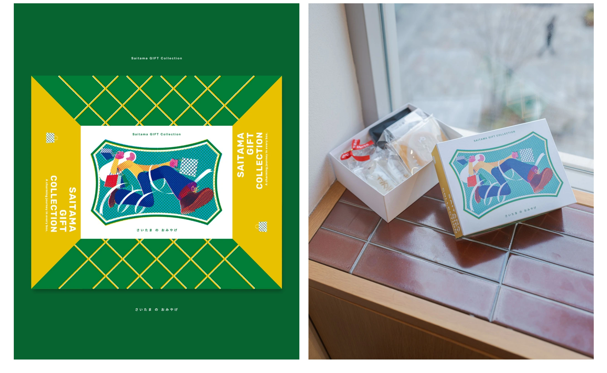

食・農 / 観光 / 埼玉
さいたまのおみやげ

PROJECT INFORMATION
埼玉県物産観光協会の「さいたまのおみやげ」。地域の品物を届けるパッケージ・グラフィックの制作実績です。
01 / 背景とテーマ
輪郭を与える
土産物は、ひとつの店やひとつの地域で完結しがちです。「あの人に贈りたい埼玉県のお土産」をテーマに県民投票を行い、選ばれた5つの商品をひとつのアソートセットにまとめました。やわらか、十万石まんじゅう、彩果の宝石、白鷺宝、こ、ふぃなんしぇ。
02 / SCHEMAの担当範囲
全体を整える
SCHEMAは企画・ディレクション・デザインを担当。メインビジュアルはアーティストの一乗ひかるさんにお願いし、「観光と物産」をテーマに、お土産を手に持つ躍動感のある絵にしていただきました。
03 / 取り組みの視点
枠組みをひらく
これをひとつ買うだけで、埼玉を代表する5つの味に出会える。メーカーをまたぐ手間を引き受けることで、秩父だけ・川越だけではない、県という単位のお土産という枠組みをつくりました。物産観光フォーラムでプロトタイプとして発表し、いまも改良を続けています。